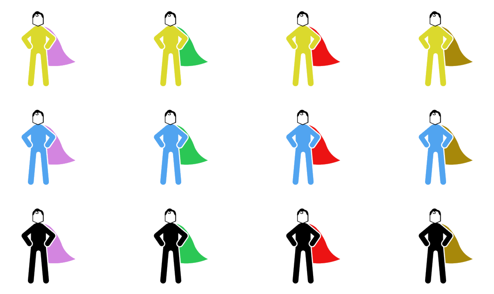
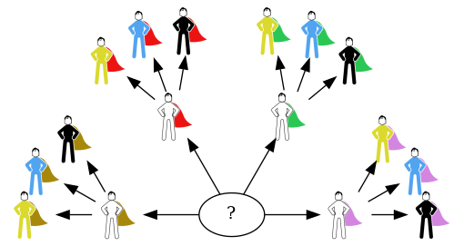

9.1. Principio fondamentale del calcolo combinatorio#
Lo so che può sembrare impossibile, ma in alcuni casi Batman ha scelto di indossare dei costumi molto più sgargianti rispetto a quello grigio dei fumetti originali e a quello nero dei film più recenti. Per esempio, nel numero 241 di Detective Comics l'uomo-pipistrello decide di combattere il crimine alternando tra le altre tenute arancioni, verdi e rosa al fine di attirare l'attenzione su se stesso piuttosto che su una ferita al braccio di Robin che avrebbe potuto destare sospetti essendo ovviamente uguale a quella che aveva riportato la sua identità segreta Dick Grayson [Robb, 2014].
Modificando leggermente il contenuto di questo fumetto, immaginiamo che per differenziare ancora maggiormente la varietà dei propri costumi, Batman possa contare su di un guardaroba contenente quattro mantelli, rispettivamente di colore rosa, verde, rosso e marrone, e tre costumi dei quali il primo è giallo, il secondo azzurro e il terzo nero. In quanti modi diversi si possono abbinare insieme un costume e un mantello? La Fig. 9.1 illustra come rispondere a questa domanda: siccome per ognuno dei quattro mantelli è possibile scegliere tre diversi costumi, il numero totale dei possibili abbinamenti è \(4 \times 3 = 12\).
Show code cell content
import matplotlib.pyplot as plt
import matplotlib.image as mpimg
plt.style.use('sds.mplstyle')
from myst_nb import glue
cloak = ['pink', 'green', 'red', 'brown']
costume = ['yellow', 'blue', 'black']
fig, ax = plt.subplots(len(costume), len(cloak), figsize=(9, 5))
for y, cost_col in enumerate(costume):
for x, cloak_col in enumerate(cloak):
img = mpimg.imread(f'img/sh-{cost_col}-{cloak_col}.png')
ax[y][x].imshow(img)
ax[y][x].axis('off')
plt.show()
glue("sh-combinations", fig, display=True)

Fig. 9.1 Una semplice illustrazione del principio fondamentale del calcolo combinatorio: avendo quattro opzioni possibili per una prima scelta e tre opzioni per una seconda scelta, si hanno dodici scelte combinate in tutto.#
Generalizzando questo ragionamento si arriva al cosiddetto principio fondamentale del calcolo combinatorio: se ci sono \(s_1\) modi per operare una scelta e, per ciascuno di essi, ci sono \(s_2\) modi per operare una seconda scelta e, per ciascuno di essi ci sono \(s_3\) modi per operare una terza scelta e così via fino a \(s_t\) modi per operare la \(t\)-esima scelta, allora il numero delle sequenze di possibili scelte è pari a
Osserviamo che questo risultato corrisponde a calcolare il numero delle foglie di un albero di profondità \(t\) il cui primo livello ha \(s_1\) nodi, ciascuno dei quali ha \(s_2\) figli, ciascuno dei quali ha \(s_3\) figli e così via, come evidenziato nella Fig. 9.2.
Show code cell content
import graphviz
import numpy as np
cap_colors = ['pink', 'green', 'red', 'brown']
costume_colors = ['black', 'blue', 'yellow']
tree = '''digraph { layout="neato" bgcolor="#00000000"
s[pos="0,0!" label="?"] \n'''
cap_rho = 1.3
cap_theta = np.linspace(0, np.pi, len(cap_colors))
cap_pos = np.array((cap_rho * np.cos(cap_theta),
cap_rho * np.sin(cap_theta))).T
costume_rho = 1
theta_diff = np.pi/2 /(len(costume_colors)+1)
theta_start = 0
theta_end = 2 * np.pi/6
theta_gap = (len(costume_colors) + 1) / len(costume_colors) * np.pi/6
for cap_color, (x, y) in zip(cap_colors, cap_pos):
tree += f'cap_{cap_color}[pos="{x:.2f},{y:.2f}!" ' + \
f'image="./img/{cap_color}-cap.png" label="", ' + \
f'style="invisible" ' +\
f'width=.6 height=.6 fixedsize="true"]\n'
tree += f's -> cap_{cap_color};'
costume_theta = np.linspace(theta_start, theta_end, len(costume_colors))
costume_pos = np.array((costume_rho * np.cos(costume_theta),
costume_rho * np.sin(costume_theta))).T
theta_start += theta_gap
theta_end += theta_gap
for costume_color, (x_delta, y_delta) in zip(costume_colors, costume_pos):
tree += f'cap_{cap_color}_costume_{costume_color}' +\
f'[pos="{x+x_delta:.2f},{y+y_delta:.2f}!" ' +\
f'image="./img/sh-{costume_color}-{cap_color}.png" ' + \
f'label="", ' + \
f'style="invisible" width=.6 height=.6 fixedsize="true"]\n'
tree += f'cap_{cap_color} -> cap_{cap_color}_costume_{costume_color};'
tree += '}'
graph = graphviz.Source(tree, format="png")
graph.render('tree')

Fig. 9.2 L'albero che corrisponde alle scelte relative all'esempio illustrato nella Fig. 9.1.#
È importante notare come l'applicazione del principio fondamentale del calcolo combinatorio prescinda dal tipo degli oggetti considerati, siano essi mantelli, costumi, verdure, strumenti finanziari o altro. Se nell'esempio precedente avessimo dovuto abbinare tre colori a quattro modelli di automobile avremmo ottenuto lo stesso risultato numerico. In altre parole, i risultati che si ottengono applicando le regole del calcolo combinatorio prescindono dalla natura degli oggetti, bensì dipendono solamente dalla loro numerosità ed eventualmente dal numero di posti da tenere in considerazione. Si parla infatti, ad esempio, delle permutazioni di \(n\) oggetti o delle combinazioni di \(n\) oggetti in \(k\) posti. Nei paragrafi che seguono, in ogni caso, faremo spesso riferimento a oggetti specifici, per esemplificare i concetti che verranno man mano esposti.